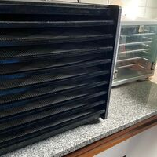

Laura
Mi nombre es Laura Lunelli, durante toda mi vida me intereso el tema de la nutrición, y en mi camino evolutivo fui descubriendo distintas formas de cocinar y nutrirnos para que así el alimento sea parte de nuestra medicina.
De esta manera, buscando y estudiando, descubrí esta técnica de la deshidratación que no es nueva, pero que con estos aparatos eléctricos logramos realizarla en forma más controlada, y con ello los alimentos potencian sus sabores y mantienen vivas las enzimas ayudándonos de esta manera a digerirlos mejor.
Francisco
Mi nombre es Francisco Crema, soy hijo de Laura y ella me hizo conocer el mundo de la comida deshidratada, y la verdad que se lo agradezco ya que me encanta poder comer las frutas de esta forma saludable, como merienda, o después de entrenar, cuando estudio, así siempre.
Como trabajamos
-Primer paso: cortamos las frutas en rodajas, de no mas de 1cm.
-Segundo paso: las distribuimos en las distintas bandejas del deshidratador, encendiendo este y dejándolo a una temperatura constante de 42°, consiguiendo mantener sus nutrientes y enzimas, así se dejan durante 5hs y se dan vuelta, se continua deshidratando las horas necesarias dependiendo de la fruta y según lo que deseemos en cuanto a su textura y flexibilidad.
-Tercer paso: una vez terminado el proceso, se guardan en recipientes herméticos, donde pueden mantenerse hasta tres meses o mas.
En LAUVI deshidratamos: Manzanas, Peras, Frutillas, Arándanos, Limones, Naranjas, Bananas, Berenjenas, Zucchini, Tomates.